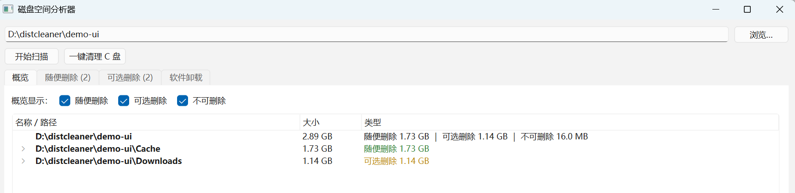

大文件夹一眼定位
扫描任意文件夹或整个系统盘，按大小排列超过 100 MB 的目录和大文件，空间去向不再靠猜。
看清每一 GB 去了哪里。三色分级先把“为什么能删”讲清楚， 再由你决定删不删；删除默认进回收站，容量允许时可以还原。
C 盘满了，却不知道空间被谁吃掉；网上的清理教程让你删这个删那个， 真动手又怕删坏系统。磁盘空间分析器想解决的就是这件事： 先把占用和风险摆出来，把选择权留给你。 它不会替你“自动优化”，也不会碰红色保护项；每一份删除清单都能先看原因、再勾选， 删掉的东西还会先进回收站。

从“空间去哪了”到“哪些能删”，再到“删了怎么找回”，一条链路做完。
扫描任意文件夹或整个系统盘，按大小排列超过 100 MB 的目录和大文件，空间去向不再靠猜。
绿色随便删、黄色可选删、红色不可删。每一条都附带原因，不让你在陌生的文件名前做选择题。
自动扫描系统盘，只默认勾选绿色项。删除前仍会列出完整清单，可以逐项检查、随时取消。
通过 Windows 回收站删除，误删可还原；超出回收站容量的文件会按系统规则处理。被占用或没权限的文件会自动跳过。
汇总系统已安装软件，一键调起软件自带的卸载程序。默认隐藏系统组件，避免误操作。
不联网、不上传文件名或扫描结果，也不需要账号。便携版解压即用，无需安装，也不会常驻后台。
规则从保守出发：拿不准的文件，一律按红色保护。
可以重新生成的内容，删了通常没有影响。
通常可以删，但可能有损失，需要你自己判断。
系统、程序、个人资料，以及无法识别的类型。
涉及删除的工具，克制比聪明更重要。
Windows 10 / 11 64 位便携版。解压后双击 DiskCleaner.exe 即可使用。
SHA-256: 1087146AA134A84D56D1F422E00C86283BA1A57449E7F892367664640B52A6BB本版本未购买代码签名证书，Windows SmartScreen 可能显示“未知发布者”。 程序不联网，也不包含安装器；你可以先核对校验值，再选择“仍要运行”。
把压缩包解压到任意文件夹，不要在压缩包里直接运行。
选择要分析的文件夹，或点“一键清理 C 盘”扫描整个系统盘。
在概览和两个删除页里逐项查看原因，勾选你确认要删的文件。
确认后送入回收站；需要时打开回收站还原，或到“软件卸载”页卸载软件。
不会。Windows、Program Files、运行库、个人文档以及无法识别的类型都会被标为红色，不会进入删除列表。删除前还需要你手动确认。
通常可以。删除的文件会进入 Windows 回收站（受回收站容量限制），打开回收站还原即可。如果已经清空回收站，就无法通过本工具恢复。
概览页只展示超过 100 MB 的文件夹和大文件；删除列表最多列出最大的 20,000 个绿色或黄色文件。数量更多时，清理完再扫描一次即可继续处理。
普通权限就能使用，只是部分系统目录会被跳过。想扫描得更完整，可以点右下角“以管理员身份重启”，Windows 会弹出 UAC 确认。
当前版本只支持 Windows 10 / 11 64 位。更老的系统缺少所需的运行环境，暂不提供支持。
不会。程序不包含联网功能，扫描结果只保存在当前窗口的内存里，关闭程序后不会保留。